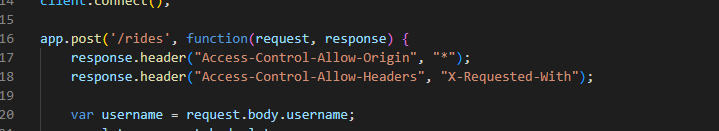

I was hired to review the vulnerabilities of the Ride-Hailing Service
First I setup a front-end page to interact with the server lcoation at https://jordan-marsh.herokuapp.com/. Using this I did some initial tests to ensure it was working as expected. Before reviewing the server-side code, I started some initial Black-Box testing. I went ahead and checked to see if I could use Burp Suite to inject bad data from the front-end site's request to the server. The Burp Suite proxy did not allow me to do this. I proceeded to try using curl next and to try inputting malicious data. Now it was time to review the server code. Looking through the code directly I was able to determine several other vulnerabilities.
- XSS Injection: This issue is located on the /update page. It is a high severity issue as it allows malicious scripts to be injected into the site. This issue was found using the curl command to inject data directly to the /update site.
 This issue could be best resolved sanitizing any incoming data before it enters the database. There are a variety of tools that can assist with this such as the Caja sanitizer. You can also require POST requests to include a hidden pseudo-random value that is associated with the user. This would require the attacked to be able to accurately guess this value before being able to submit any data.
This issue could be best resolved sanitizing any incoming data before it enters the database. There are a variety of tools that can assist with this such as the Caja sanitizer. You can also require POST requests to include a hidden pseudo-random value that is associated with the user. This would require the attacked to be able to accurately guess this value before being able to submit any data. - SQL Injection: This issue is present at the /passenger.json site. It is another high severity issue that allows malicious actors to have access to the database directly. This issue can be found by using sequal injection on the /passenger.json page by adding additional code to the url: ?username = anything' or '1' = '1. This can be prevented by parameterizing queries and separating code from data. Using tools like validatorjs or escaping query values with mysql.escape() can mitigate this issue.
- SQL Injection: This issue is present at /vehicle.json. Similar to the /passenger.json site, this is a high severity issue with the same repercussions and allows for unauthorized access to confidential information. This issue can be found using the same method as on /passenger.json, by adding additional code to the url: ?username = anything' or '1' = '1. This can be prevented by parameterizing queries and separating code from data. Using tools like validatorjs or escaping query values with mysql.escape() can mitigate this issue.
- Cross-Origin Resource Sharing policy is not secure. This is located on line 17 of the server code. Currently Access-Control-Allow-Origin: is set to allow any origin to request from this resource. This can be dangereous because it can allow other sites to have access to cookies or cookie-based sessions for this resource. This issue was found by reviewing the code. This can be fixed by changing the * in ("Access-Control-Allow-Origin", "*") to be more restrictive.
The issues found can be remediated by modifying the architecture of the server code.